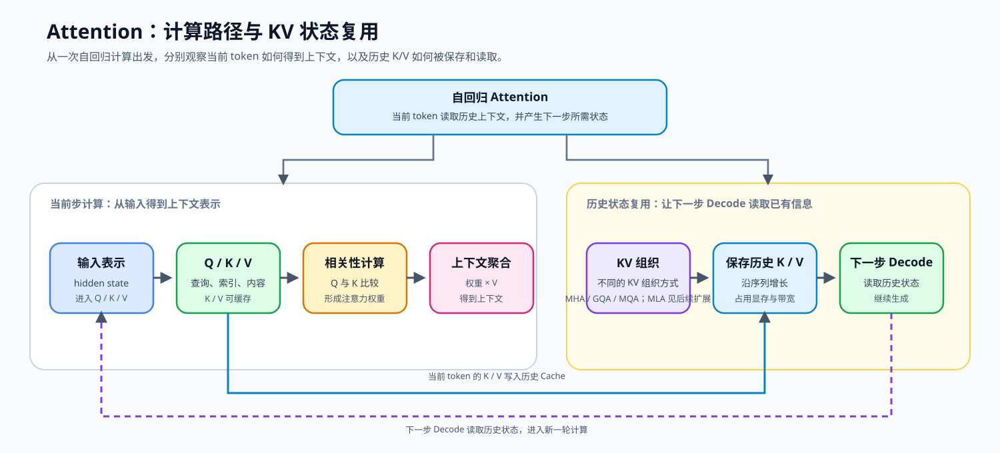
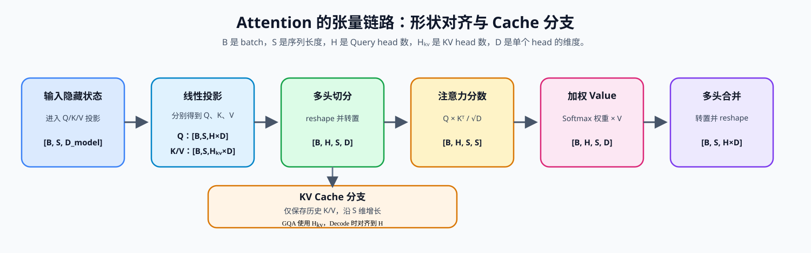

新版 Notebook 任务
打开本课 Notebook 官方版本
04. Attention MHA GQA | 多头注意力
难度： Medium | 环境： CPU-first | 标签： 基础实现, Attention, MHA/GQA | 目标人群： 基础实现学习者
本节导读
生成式模型每次预测新 token，都要回看前面的上下文。序列越长，Attention 要读取和维护的历史信息越多；如果每一步都重复计算过去的 Key / Value，推理会非常浪费，而把它们全部缓存下来又会带来显存和带宽压力。
本节把 Attention 的工程主线串起来：先实现多头注意力，再加入 KV Cache 避免重复计算，最后用 GQA 在表达能力和 KV Cache 开销之间折中。完成后，你应该能看懂现代 LLM 为什么会从 MHA 演进到 GQA，也能为后面的解码策略、PagedAttention 和推理优化章节建立基础。
关键词： Attention, GQA, KV Cache
当前题目检查清单
- TODO 1: Reshape xq, xk, xv 以适配多头注意力计算
- TODO 2: 处理 KV Cache
- TODO 3: 计算注意力分数 (Scaled Dot-Product)
- TODO 4: 恢复形状并输出
展开官方原理、图解与任务要求
前置阅读
导语： 先能写出基础注意力并理解 RoPE 如何作用于 Query / Key，再比较 MHA、KV Cache 和 GQA 对历史状态与读取成本的影响。
Step 1: Attention 与 KV Cache 的问题来源
生成新 token 时，模型需要用当前查询读取历史上下文：Q 表示当前要查询的内容，K 用于匹配历史位置，V 提供被聚合的信息；位置关系由前置的 RoPE 加入。历史 token 的 K/V 可以保存为 KV Cache，后续 Decode 直接复用，但缓存长度和请求数量增加后，显存占用与读取带宽也会随之增长。下面先看 MHA 的计算路径，再观察 GQA、MQA 如何改变 K/V 的组织和缓存规模，最后连接到 Cache 拼接与 Decode。

Step 2: 核心公式与张量维度
本节追踪 Q/K/V 张量的形状变化，为后面的实现建立统一的维度口径。可以先把 H 理解为 Query head 的数量，把 H_kv 理解为保存 K/V 的 head 数，把 D 理解为每个 head 的特征宽度；GQA 的关键变化就是让多个 Query head 共享较少的 KV head。
经过线性投影后，注意力计算公式：
Attention(Q,K,V)=Softmax(dkQKT)V
假设 Batch=B, Seq_len=S, Num_Heads=H, KV_Heads=H_kv, Head_Dim=D，先看一个小例子：当 H=4、H_kv=2 时，每组 K/V 被两个 Query head 共享；计算前需要对齐 KV head，但缓存仍只保存两组 KV。下面把头数关系和形状变化放在同一张表中：
| 观察阶段 |
关键关系 |
张量形状或配置 |
对计算与 Cache 的影响 |
| MHA / GQA / MQA |
H 与 H_kv 的关系 |
MHA：H=H_kv；GQA：H>H_kv；MQA：H_kv=1 |
决定 K/V 是否共享，以及缓存中保存多少 KV head |
| 线性投影 |
分别生成 Q、K、V |
[B,S,H×D] 或 [B,S,H_kv×D] |
序列维度仍为 S |
| 多头切分 |
拆分并转置 |
[B,H,S,D] 或 [B,H_kv,S,D] |
进入逐 head 计算；GQA 需要在计算前对齐 KV head |
| 注意力分数 |
QKᵀ / √D |
[B,H,S,S] |
每个 Query 位置与历史 Key 位置比较 |
| 加权 Value |
Softmax 权重聚合 V |
[B,H,S,D] |
得到上下文表示 |
| Cache 保存 |
历史 K/V 沿 S 维增长 |
Cache：[B,H_kv,S,D] |
上下文变长时显存和读取量增加 |
| 多头合并 |
将各 head 的输出重新拼接 |
[B,H,S,D] → [B,S,H×D] |
恢复到输出投影需要的形状 |

Step 3: Attention 机制如何改变推理资源
前两步已经说明了 Attention 的计算和张量形状。下面把不同机制放回推理过程，比较它们分别改变了缓存对象、显存容量、带宽和多请求的存储组织，并为后续阅读真实 backend 做准备。
| 机制 |
改变的对象 |
显存或带宽影响 |
下一步观察 |
| MHA |
每个 Query head 独立保存 K/V |
Cache 较大，读取量较高 |
基础 Attention 实现 |
| GQA / MQA |
多个 Query head 共享 K/V |
Cache 减少，但计算前需要对齐 head |
当前 GQA 实现 |
| KV Cache |
保存历史 K/V，避免重复计算 |
随上下文和并发增长 |
Cache 生命周期与调度 |
| MLA |
用潜在表示组织缓存 |
表示、读取路径和模型配置变化 |
模型架构扩展 |
| PagedAttention |
按 block 管理多请求 Cache |
减少碎片并支持复用 |
vLLM / 推理服务实现 |
Step 4: 实现 MHA/GQA 与 KV Cache
现在进入代码实现。请补全下方 GroupedQueryAttention 的 forward 函数中的 TODO，把前面学到的形状关系、KV Cache 和 GQA 机制写成一条最小可运行的前向路径。完成后，测试会分别检查 MHA、GQA 和带 Cache 的 Decode。
实现时先保留较少的 num_kv_heads，在注意力计算前通过 repeat_kv 对齐到 Query head 数；这样代码中的 Cache 形状可以直接对应 Step2 的表格。
| TODO |
需要完成的机制 |
关键输入与形状 |
检查重点 |
| TODO 1 |
切分 Q/K/V 并转置多头维度 |
[B,S,H×D] → [B,H,S,D]；K/V 使用 H_kv |
Query head 与 KV head 数量正确 |
| TODO 2 |
在序列维拼接历史 Cache |
kv_cache 与当前 K/V 在 dim=2 拼接 |
Cache 长度增加，且仍保存 H_kv 个 KV head |
| TODO 3 |
计算缩放点积 Attention |
Q @ Kᵀ / √D → Softmax → P @ V |
分数形状、mask 广播和输出数值有限 |
| TODO 4 |
合并多头并完成输出投影 |
[B,H,S,D] → [B,S,H×D] → o_proj |
输出形状回到 [B,S,D_model] |
题目与测试代码 · Cell 8
def repeat_kv(hidden_states: torch.Tensor, n_rep: int) -> torch.Tensor:
"""
将形状 [B, H_kv, S, D] 的 KV 头复制 n_rep 次，
输出为 [B, H_kv * n_rep, S, D]，以匹配 Query 头的数量。
当 n_rep == 1 时（即 MHA），直接返回原张量。
"""
batch, num_kv_heads, slen, head_dim = hidden_states.shape
if n_rep == 1:
return hidden_states
#hidden_states = hidden_states[:, :, None, :, :].expand(batch, num_kv_heads, n_rep, slen, head_dim)
hidden_states = hidden_states.unsqueeze(2).expand(-1, -1, n_rep, -1, -1)
return hidden_states.reshape(batch, num_kv_heads * n_rep, slen, head_dim)
class GroupedQueryAttention(nn.Module):
def __init__(self, hidden_dim: int, num_heads: int, num_kv_heads: int = None):
super().__init__()
if hidden_dim <= 0 or num_heads <= 0:
raise ValueError("hidden_dim 和 num_heads 必须为正整数")
if hidden_dim % num_heads != 0:
raise ValueError("hidden_dim 必须能被 num_heads 整除")
self.hidden_dim = hidden_dim
self.num_heads = num_heads
self.num_kv_heads = num_kv_heads if num_kv_heads is not None else num_heads
# GQA/MQA 要求 Query head 可以平均分配给 KV head。
if self.num_kv_heads <= 0 or num_heads % self.num_kv_heads != 0:
raise ValueError(
f"num_heads ({num_heads}) 必须能被 num_kv_heads ({self.num_kv_heads}) 整除"
)
self.num_queries_per_kv = self.num_heads // self.num_kv_heads
self.head_dim = hidden_dim // num_heads
# 定义投影矩阵
self.q_proj = nn.Linear(hidden_dim, num_heads * self.head_dim, bias=False)
self.k_proj = nn.Linear(hidden_dim, self.num_kv_heads * self.head_dim, bias=False)
self.v_proj = nn.Linear(hidden_dim, self.num_kv_heads * self.head_dim, bias=False)
self.o_proj = nn.Linear(num_heads * self.head_dim, hidden_dim, bias=False)
def forward(
self,
x: torch.Tensor,
attention_mask: torch.Tensor = None,
kv_cache: tuple[torch.Tensor, torch.Tensor] = None
):
"""
前向传播。
Args:
x: 输入张量，形状 [batch, seq_len, hidden_dim]
attention_mask: 注意力掩码，形状应为 [batch, 1, 1, seq_len]（因果掩码）
或 [batch, 1, seq_len, seq_len]；可见位置通常为 0，
屏蔽位置为 -inf，并广播到 scores。
kv_cache: 缓存的 (K, V) 张量，形状为
([batch, num_kv_heads, cached_seq_len, head_dim], ...)。
Returns:
输出张量 [batch, seq_len, hidden_dim]，更新后的 KV Cache
"""
batch_size, seq_len, _ = x.shape
# 1. 线性投影
xq, xk, xv = self.q_proj(x), self.k_proj(x), self.v_proj(x)
# ==========================================
# TODO 1: Reshape xq, xk, xv 以适配多头注意力计算
# 提示: 先把最后一维拆成 [num_heads, head_dim] / [num_kv_heads, head_dim]（使用 reshape 或 view），
# 再将seq_len和num_heads换位，得到 [B, num_heads, S, head_dim] / [B, num_kv_heads, S, head_dim]
# ==========================================
# xq = ???
# xk = ???
# xv = ???
# ==========================================
# TODO 2: 处理 KV Cache
# 提示: 如果有 cache，将历史 KV 拼接在当前 KV 的 seq_len 维度前
# 注意: 拼接维度是 dim=2 (seq_len)
# ==========================================
if kv_cache is not None:
k_cache, v_cache = kv_cache
# 只拼接未扩展的 KV，避免把 GQA 的缓存放大到 MHA 大小。
# xk = ???
# xv = ???
new_kv_cache = (xk, xv)
# 通过 repeat_kv 把 GQA 的 KV 头数扩充到和 Query 数量一致
xk = repeat_kv(xk, self.num_queries_per_kv)
xv = repeat_kv(xv, self.num_queries_per_kv)
# ==========================================
# TODO 3: 计算注意力分数 (Scaled Dot-Product)
# 公式: scores = Q @ K^T / sqrt(head_dim)
# 提示: 使用 torch.matmul，并对 K 转置最后两维
# 注意: attention_mask 形状为 [batch, 1, 1, seq_len]（因果掩码），
# 会广播到 scores 的 [batch, num_heads, seq_len, seq_len]
# ==========================================
# scores = ???
if attention_mask is not None:
scores = scores + attention_mask
# probs = ???
# output = ???
# ==========================================
# TODO 4: 恢复形状并输出
# [B, H, S, D] -> [B, S, H*D]
# 提示: transpose + contiguous + view
# ==========================================
# output = ???
return self.o_proj(output), new_kv_cache
题目与测试代码 · Cell 9
# 运行此单元格以测试你的实现
def causal_mask(seq_len: int) -> torch.Tensor:
"""构造允许看见当前位置及历史位置的加性因果掩码。"""
mask = torch.zeros(1, 1, seq_len, seq_len)
return mask.masked_fill(torch.triu(torch.ones_like(mask, dtype=torch.bool), diagonal=1), float('-inf'))
def test_mha_mqa_gqa():
try:
batch_size, seq_len, hidden_dim, num_heads = 2, 16, 128, 4
# 1. 测试 MHA
print("Testing MHA (Multi-Head Attention)...")
mha = GroupedQueryAttention(hidden_dim, num_heads, num_kv_heads=num_heads)
x = torch.randn(batch_size, seq_len, hidden_dim)
full_mask = causal_mask(seq_len)
out, _ = mha(x, attention_mask=full_mask)
assert out.shape == (batch_size, seq_len, hidden_dim), "MHA 输出形状错误!"
assert torch.isfinite(out).all(), "因果 mask 后的 MHA 输出出现 NaN 或 Inf!"
# 2. 测试 GQA
print("Testing GQA (Grouped-Query Attention)...")
gqa = GroupedQueryAttention(hidden_dim, num_heads, num_kv_heads=2)
out, _ = gqa(x, attention_mask=full_mask)
assert out.shape == (batch_size, seq_len, hidden_dim), "GQA 输出形状错误!"
assert torch.isfinite(out).all(), "GQA 输出出现 NaN 或 Inf!"
# 3. 测试 KV Cache
print("Testing KV Cache Autoregressive Decoding...")
prefill_len = 5
x_prefill = torch.randn(batch_size, prefill_len, hidden_dim)
prefill_mask = causal_mask(prefill_len)
full_out, _ = mha(x_prefill, attention_mask=prefill_mask)
_, kv_cache = mha(x_prefill[:, :-1], attention_mask=causal_mask(prefill_len - 1))
x_decode = x_prefill[:, -1:]
decode_mask = torch.zeros(1, 1, 1, prefill_len)
out_decode, new_kv_cache = mha(x_decode, attention_mask=decode_mask, kv_cache=kv_cache)
assert new_kv_cache[0].shape == (batch_size, num_heads, prefill_len, hidden_dim // num_heads), "KV Cache 更新错误!"
assert torch.allclose(full_out[:, -1:], out_decode, atol=1e-5, rtol=1e-4), "Prefill 与 Cache Decode 的结果不一致!"
_, gqa_cache = gqa(x_prefill)
_, gqa_cache_next = gqa(x_decode, kv_cache=gqa_cache)
assert gqa_cache_next[0].shape[1] == 2, "GQA Cache 的 KV head 数错误!"
assert gqa_cache_next[0].shape[2] == prefill_len + 1, "GQA Cache 的序列长度错误!"
# 4. 参数边界：避免静默截断或无法平均分配 KV head
for bad_args in [(130, 4, 2), (128, 3, 1), (128, 4, 3)]:
try:
GroupedQueryAttention(*bad_args)
raise AssertionError(f"非法配置未被拒绝: {bad_args}")
except ValueError:
pass
print("\n✅ All Tests Passed! Attention 算子实现通过测试。")
except NotImplementedError:
print("请先完成 TODO 部分的代码！")
raise
except (AttributeError, NameError, TypeError, ValueError) as e:
if isinstance(e, AttributeError):
print("代码未完成，无法找到必要的属性")
elif isinstance(e, NameError):
print("代码可能未完成，导致了变量未定义")
elif isinstance(e, TypeError):
print("代码可能未完成，导致了类型错误")
else:
print("代码可能未完成，导致了张量维度错误")
raise NotImplementedError("请先完成 TODO 部分的代码！") from e
except Exception as e:
print(f"\n❌ 测试失败，请检查张量维度: {e}")
raise
test_mha_mqa_gqa()
本区由当前 Notebook 题目区生成。下面的精讲用于概念练习；回到 Notebook 时以本区的函数签名、TODO 和测试为准。参考答案及可选实验请在 Notebook 中查看。